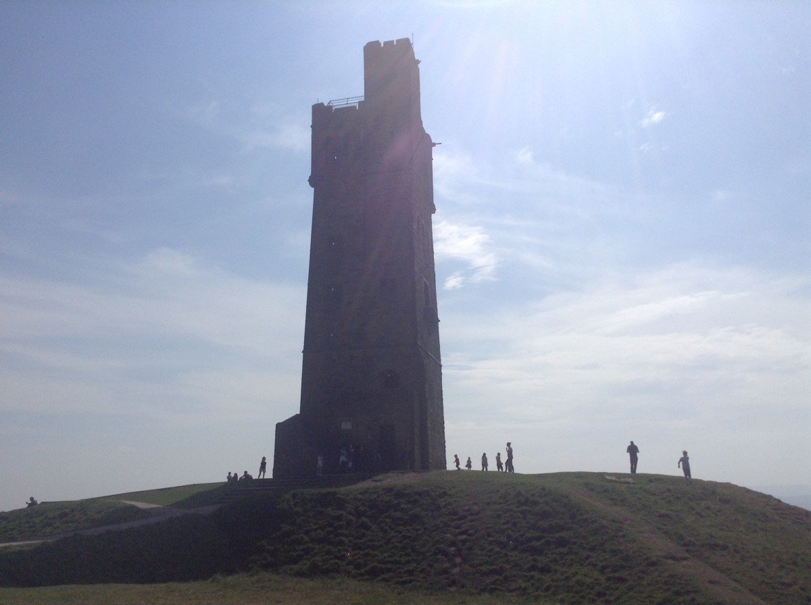
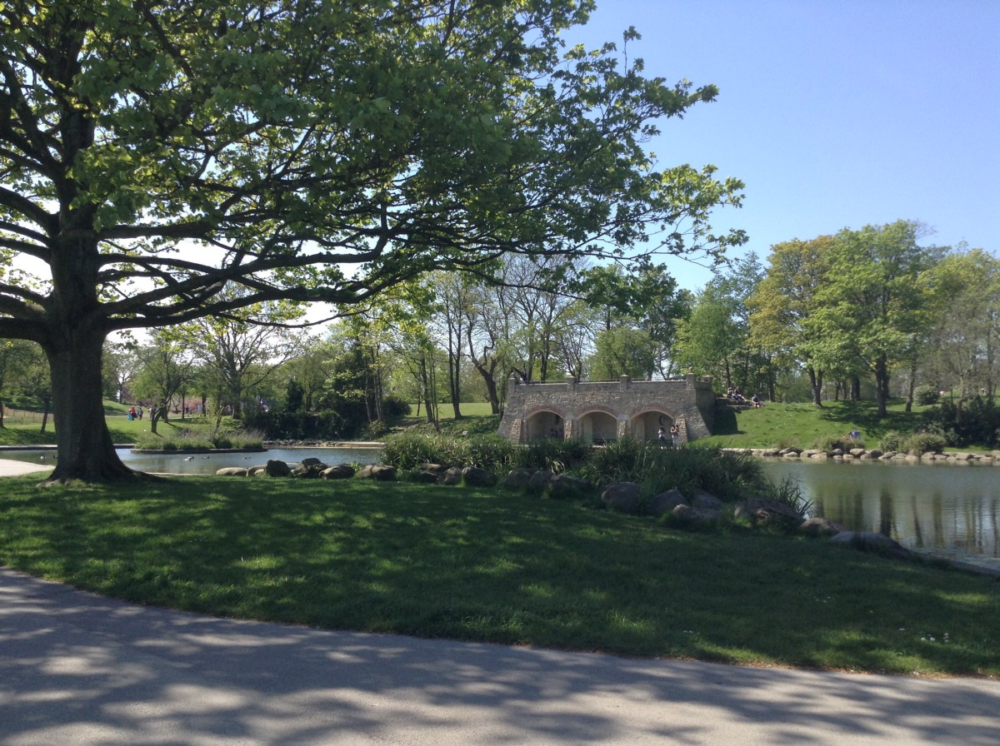
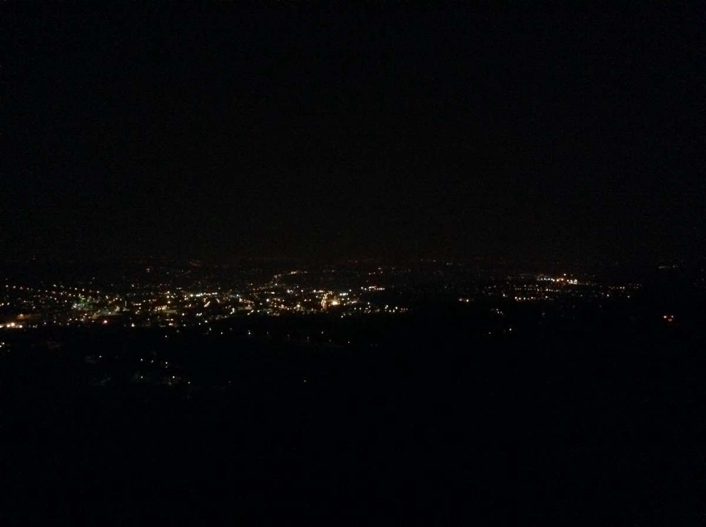

Having Fun In The Sun!
Published: 14th May, 2016
At the start of this week, we were blessed with the gorgeous sun beaming down on us. I made the most of this beautiful weather by putting a few of my other tasks I had planned on hold and filled those days with fun activities in the sun.
The first of which was walking up to Castle Hill which is where the prestigious Victoria Tower stands tall. I’ve wanted to go up there for a while now but never found the time. The walk up to Castle Hill was torture as not only was I walking mainly uphill, I also had the sun blaring down on me. This was a totally different story for the walk down.

As the sun was still with us I decided to go to Greenhead Park, which is a less strenuous walk compared to walking up to Castle Hill. I’ve been to Greenhead Park a few times before, this is a lovely place to relax and unwind.

Instead of going home and sitting in my room I met up with a friend, whom I met through the Thai Boxing Society, for a drink in the sun.
Later on in the evening we made a spontaneous decision to walk up to Castle Hill to see the whole of Huddersfield at night. Yes, I forgot how painful it was walking up there the first time. However, it was all worth it as the view was phenomenal and just super relaxing.

During both days, I captured video footage to make a timelapse video, took some photographs and relaxed in the sun.
I caught the sun a little, let’s just hope I get a nice tan. I am really glad I made the most of the gorgeous weather we had! :)
Photos taken at Castle Hill: https://goo.gl/photos/YY6Pr1EZghE7zt9e8
Photos taken at Greenhead Park: https://goo.gl/photos/JnUeUBfDvhctvEFE6
Greenhead Park | Timelapse Video